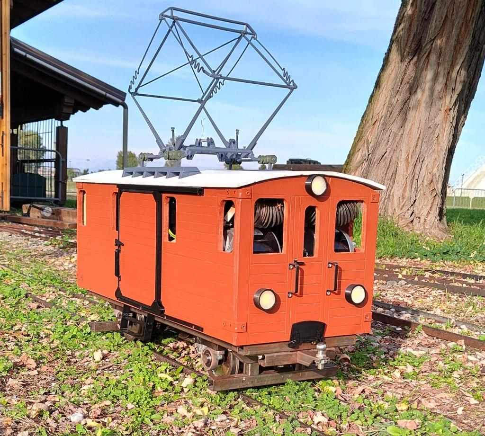
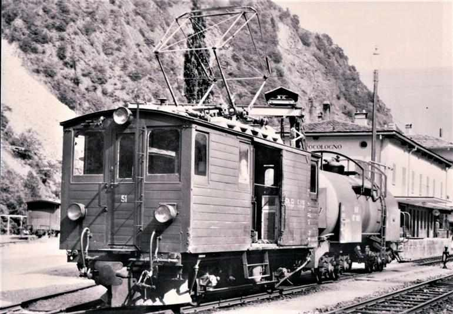
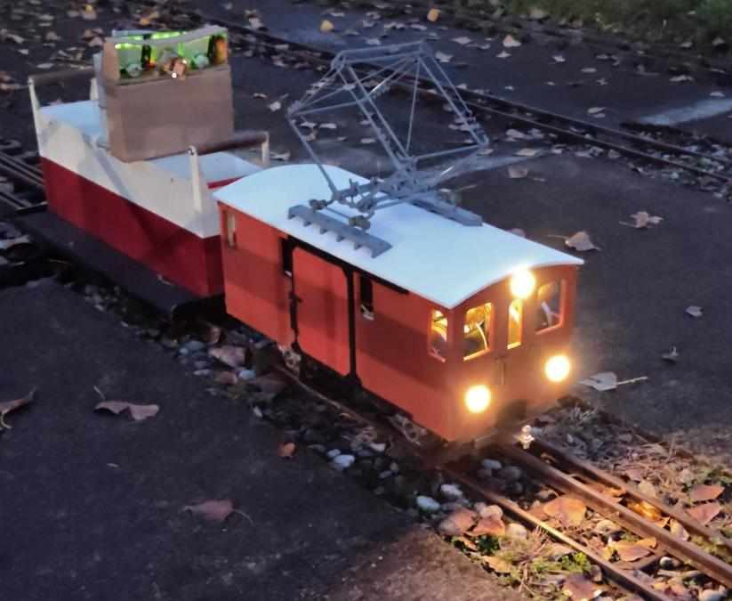

Fe2/2 51 5" gauge railcar
This is a 9:1 working reproduction of Fe 2/2 51 motorized baggage railcar.
Construction process:
After choosing the model I started gathering informations. The dimension were extracted from photos and online sources.
To use at best the available materials a 3D model was created. The 3D model allowed to easily evaluate the placing of batteries, motors and control circuit using all the available space.
The frame and the body were made with basic materials (wood, metal pipes) found in hardware stores and online. The only custom parts were the 4 steel wheels, kindly donated by Alberto Celot.
Many of the parts drawn were 3D printed and used for the real model (sprockets, motor mounts, details and much more).

The loco has 4*250W 24VDC motors, 2*12V 60Ah lead acid batteries and an old school series-parallel + rheostat motor controller.
4 motors were needed to obtain multiple economic speeds (3 different series/parallel combinations possible).
The batteries are larger than needed, they help by increasing the total mass and so the traction capability.
In total it weights 50kg (20kg without batteries), top speed 22km/h.
Insides, in the second photo are visible all th 15 relays needed to change the connection of the motors and rheostat   
Sources: lanostrastoria.ch bahnbilder.de Wikipedia berninabahn.ch
Published: 2026-02-09, Last edit: -